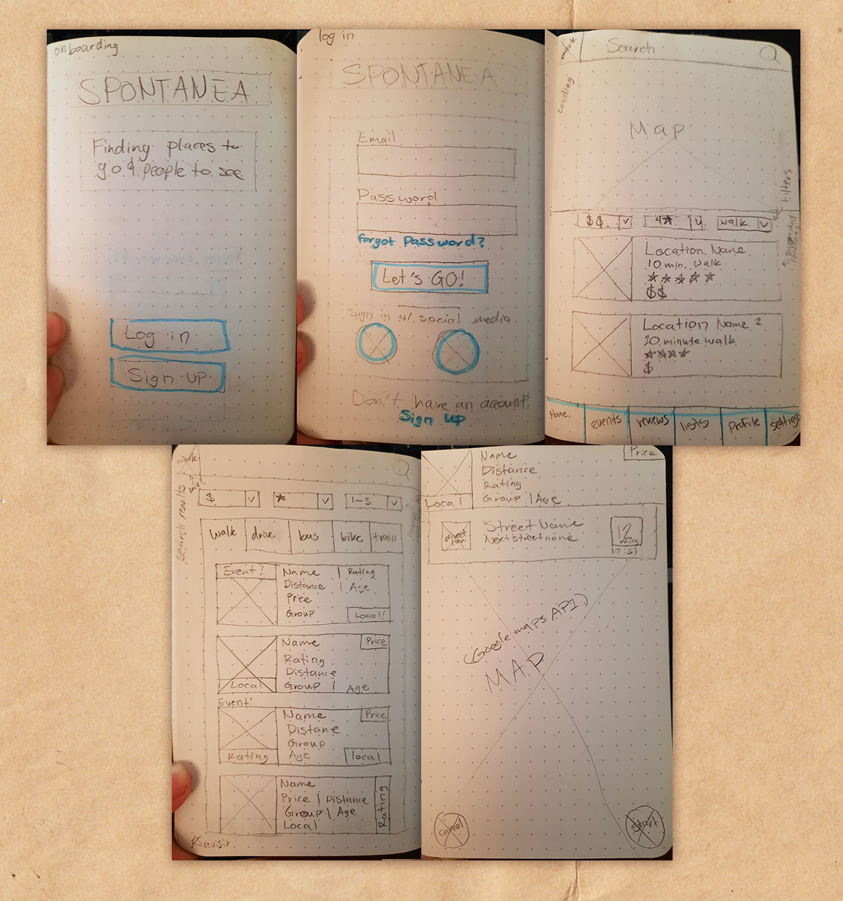
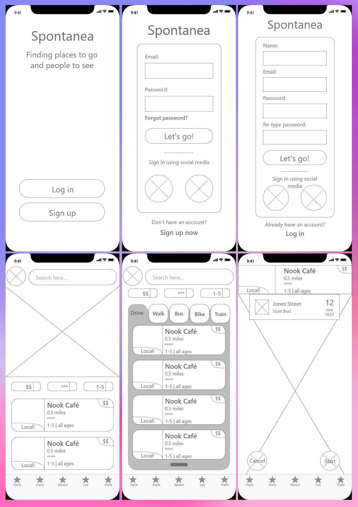

Spontanea
- Prompt: Imagine you've just been hired as a product designer for a new travel startup. The startup plans to launch the app once the global Pandemic ends. The startup’s goal is to build a modern-day mobile app that helps people plan their next trip, post-Pandemic.
- Methods Practiced: User research, Definition & Ideation, Prototyping, Testing
- Timeframe: 4 weeks
- Platform: Mobile
- Team size: solo
- Tools and software:
The Problem:
When traveling, it is often fun to play things by ear and see where the day takes you. However, without a local guide or extensive research, it can be hard to know where cool attractions are or how to get to them.
The Solution:
An app that connects users to local places based on their location. Spontanea can be used while traveling or at home to create some adventure while you travel.

- Conducted user research through interviews and survey and synthesized information.
- Designed the user experience of the website.
- Designed the user interface of the website with feedback from users.
- Prototyped and iterated on designs in Adobe XD.
Main Responsibilities:
Research Phase
Proto persona
To begin, I created a proto-persona to help guide me in creating questions for my user interviews. I imagined Jarvis to be the kind of person who liked to visit local spots of interest after work, but wasn't interested in high-energy events or areas.

User Interviews
Once I completed my user research I realized that my initial thoughts were slightly off-base, the user who would be most-likely to use my app would be the kind of person that would not consider the mood of a location paramount, more likely they would use the app for social events and to link up with friends, and so they would have other considerations to weigh.

User Persona
Thus I created the user persona of Kayan based on the interviews I conducted after aggregating the data through an empathy map and affinity diagram. There was a type of user that came up in my testing often enough to mention: those who travel to escape the city. These users' wants and needs were so opposite to what Spontanea was trying to accomplish that it was clear that Spontanea's user base would be narrowed down to those who are interested in travelling around cities.

Definition Phase
User insight
After narrowing down the user base, it was important to understand exactly what problems our users would be facing and how Spontanea could solve them. I created a user insight and problem statements to explore this, understanding that Spontanea's users are spontaneous travellers who are interested in finding locations nearby where they currently are.

Problem statement
...

Ideation Phase
User journey map
I then took these insights into a brainstorming session with the "I like, I want, what if?" method which I plugged into a feature prioritization matrix to decide which features to include. I then created a user journey map to illustrate the benefit that Kayan would receive from using Spontanea, as well as adress opportunities for Spontanea to improve Kayan's experience.

Prototyping Phase
Competitor analysis
Using competitive analysis allowed me to understand what competitor applications did well and what they were lacking. I noticed while the apps I surveyed collectively checked all the boxes, no single app did it alone.

Paper prototype
I then created a user flow to flesh out how a user would go through the process of onboarding, searching for a location, selecting transportation, and arriving on-site.
Digital protoype
I then used the user flow to sketch out a paper prototype, which I took digital in Adobe XD.
Testing Phase
Testing
In my user testing, I asked users to complete a few tasks to test how effective the UX design of the wireframe was. While there was a 100% success rate, there was still room for improvement: users could read the navigation but had suggestions to improve the readability, such as not using tabs to denote different transportation types as it could read as different destinations at first glance. Users also were not certain about how Spontanea was unique from the other travel apps on the market. I went forward with my final design with this feedback in mind.

Results

Reflection
In the end, I ended up keeping the tabs as it did not cause any of my user tests to fail, however, if I were to revisit this project I would like to explore other designs that do not rely on tabs in the manor I used. I would also like to highlight more of the unique features of Spontanea, such as the events page, perhaps making it the landing page to lean into that feature of the app.
Future opportunities include: designing remaining pages (events, favorites, lists, profile, settings, password reset, reviews), expanding on or creating social features such as a friends list to better line-up with the user goal of traveling with friends, explore adding more flavor to the app with animations.
Major take-aways from this project: user base would be travelling close-by, app is best-suited to cities, users are confused at why this app is unique, users like traveling with or meeting up with friends, users like the familiar style language Spontanea uses.